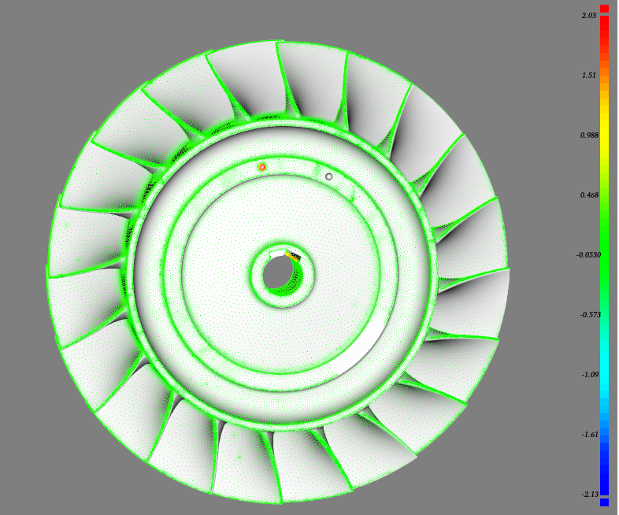
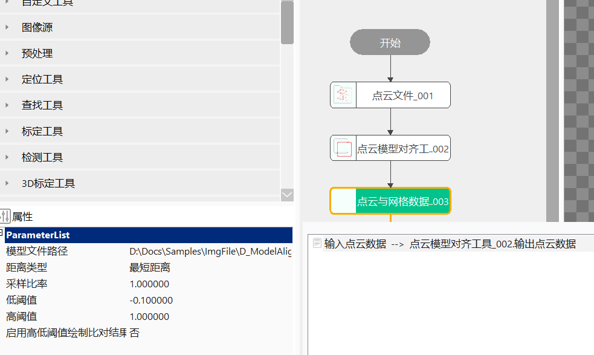

点云与网格数据比对工具主要是计算输入点云图像与模型文件之间的偏差。
在3D工程项目中，常常需要在基准坐标系下对工件进行尺寸规格质量检测。点云网格比对工具则是在该应用背景下开发的工具，主要是基于对齐结果，计算点云数据和CAD模型（stl格式）之间的曲面距离，获取偏差差异，凸显缺陷区域，如下图所示。


无
| 参数名称 | 参数描述 |
|---|---|
| 输入点云数据 | 输入待比对的点云数据，可为点云模型对齐工具的输出点云等，目的是计算对齐后的点云与STL模型差异，进而判定对齐的效果。 |
| 参数名称 | 参数描述 |
|---|---|
| 模型文件路径 | 输入待比对STL模型路径； |
| 距离类型 | 包括三种：最短距离（默认值，即计算点到面的垂直距离）; 几何距离，即计算点到面片中心距离; 沿法线距离，即计算点沿法线到面片的距离，输入点云图需要自带法向量，否则需要添加点云法线生成工具生成发现后再进行比对； |
| 采样比率 | 指定用于实际比对的采样点云数据的占比；取值范围为：(0, 1]，值为1时表示不采样； |
| 高/低阈值 | 可以计算[低阈值, 高阈值]范围内的点云数目，也可以在点云图像中显示此公差带内偏差结果，取值范围为：[-1000000, 1000000]； |
| 启用高低阈值绘制比对结果 | 是：按照设定的高低阈值设置颜色条上下限; 否：按照计算的最小最大值设置颜色条上下限。 |
| 参数名称 | 参数描述 |
|---|---|
| 输出点云图像 | 按照索引值输出对应点云图像。 |
| 最小值/最大值/均值/标准差 | 距离偏差结果的最大值、最小值、均值、标准差。 |
| 阈值范围内点云个数 | 根据期望距离阈值，进行统计，返回满足[低阈值, 高阈值]范围内的点云数目。 |
| 偏差测量结果 | 所有点的偏差结果。 |
| 执行结果 | 工具执行结果。 |
| 执行时间 | 工具执行时间。 |
| 参数名称 | 参数描述 |
|---|---|
| 输出点云图像 | 按照索引值输出对应点云图像。 |
| 最小值/最大值/均值/标准差 | 距离偏差结果的最大值、最小值、均值、标准差。 |
| 阈值范围内点云个数 | 根据期望距离阈值，进行统计，返回满足[低阈值, 高阈值]范围内的点云数目。 |
| 偏差测量结果 | 所有点的偏差结果。 |
参见“\Samples\3D\点云\点云模型对齐工具.gvp”。
点云模型对齐工具是计算输入点云与STL模型之间的变换关系，并输出对齐后的点云数据；点云与网格数据比对工具主要是计算输入点云与STL模型之间的偏差，并将偏差显示出来。